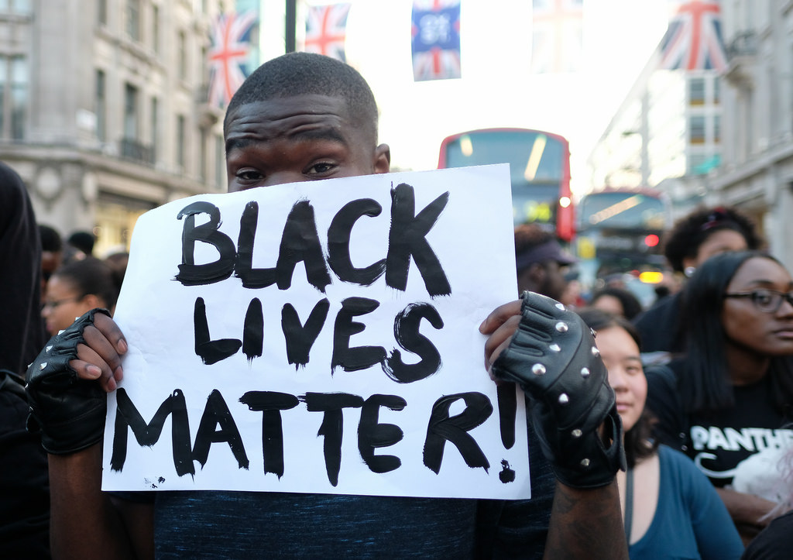

"This is not a moment, but a movement. #BlackLivesMatter was created in 2012 after Trayvon Martin's murderer, George Zimmerman, was acquitted for his crime, and dead 17-year old Trayvon was posthumously placed on trial for his own murder. Rooted in the experiences of Black people in this country who actively resist our dehumanization, #BlackLivesMatter is a call to action and a response to the virulent anti-Black racism that permeates our society. Black Lives Matter is a unique contribution that goes beyond extrajudicial killings of Black people by police and vigilantes." (source: www.blacklivesmatter.com)
#saytheirnames |
 |
|
Although no government agency tracks police shooting statistics, researchers estimate that there were nearly 1,000 fatal police shootings in 2016. The United States' police departments rank poorly when compared with the rest of the world's law enforcement agencies. For exmaple: England and Wales, with a population of 56.9 million people, had 55 fatal police shootings in 24 years. By contrast, the United States, with a population of 316.1 million, suffered 55 fatal police shooting in the first 24 days of 2015. Read more here. And here. |
Black males are nearly three times more likely than white males to be killed when law enforcement officers use force, according to a new study. Black males aged 10 years or older died at a rate 2.8 times higher in so-called legal intervention deaths in the U.S. between 2010 and 2014, the study says. Hispanic males, meanwhile, died at a rate 1.7 times higher than that of whites. About 96 percent of the deaths overall resulted from shootings. The study examined information on 2,285 fatal encounters with police between 2010 and 2014. Read more here. |
|
|  | Black Lives Matter has become an international movement. In 2015, after the death of Freddie Gray in Baltimore, Maryland, black activists around the world modeled efforts for reform on Black Lives Matter and the Arab Spring. This international movement has been referred to as the "Black Spring". Connections have also been forged with parallel international efforts such as the Dalit rights movement. Major protests have happened in Austrailia, the United Kingdom, Canada and more. |
"For to be free is not merely to cast off one's chains, but to live in a way that respects and enhances the freedom of others." - Nelson Mandela